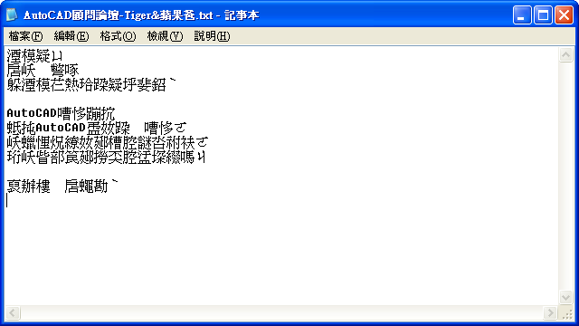
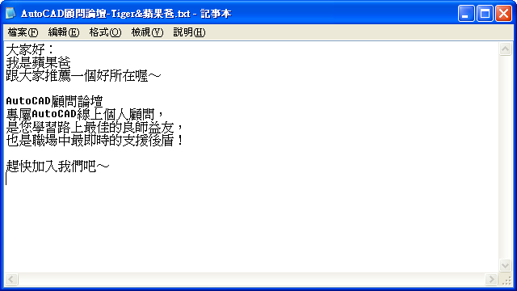
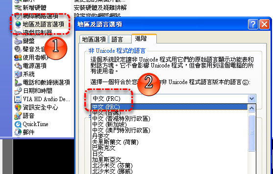

話說這作者真是太厲害，在2005年就已經分享了～
網頁教學： http://blog.yam.com/w973clt/article/21811815
InstGB5程式載點： https://app.box.com/s/f8knb4d5kp6ay17l439q
順便作了影片教學分享，有空的朋友來試試吧☆
請使用「記事本」打開文字檔(*.txt)即可轉碼喔～
轉碼前：

轉碼後：

亂碼文字檔範本下載：
https://app.box.com/s/0va3dmm66aw8fvppug4m
造成亂碼原因:
因為WIN作業系統，簡體編碼與繁體編碼不同，所以文字會出現亂碼～
如果想要正常顯示「簡體」，可以打開「控制台」→「地區及語言選項」變更

但是就會造成「繁體」的外掛程式就會變亂碼...
唯一能做的就是修改原始程式的簡體編碼。
原文相關討論：